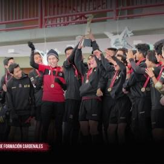

⚽ Nuestras Instalaciones de Clase Mundial
Contamos con 3 canchas de futbol de pasto sintético de última generación certificadas FIFA, iluminadas profesionalmente para entrenamientos nocturnos. Todas nuestras instalaciones incluyen vestidores modernos con regaderas calientes, área de rehabilitación con terapeutas deportivos especializados, sala de análisis de video, y zona de descanso para padres con bebidas gratuitas.
🏟️ Infraestructura profesional para futbolistas en formación
🎯 Metodología Europea Adaptada
Utilizamos el sistema de entrenamiento de academias españolas e italianas combinado con las características del futbol mexicano. Cada sesión de 90 minutos incluye: calentamiento dinámico funcional (10 min), trabajo técnico posicional (20 min), posesión de balón táctica (20 min), juego en espacios reducidos (15 min), y partido competitivo real (25 min). Los jugadores desarrollan visión de juego, toma de decisiones en milisegundos, y excelencia técnica bajo presión.
📊 Metodología que genera resultados en 3 meses
🏅 Participamos en 15+ Torneos Anuales
Nuestros equipos compiten regularmente en ligas oficiales los fines de semana contra las mejores academias de Aguascalientes. Viajamos a otros estados para enfrentar escuelas de futbol nacionales de renombre. En 2024 ganamos 8 campeonatos regionales, 5 títulos de subcampeones, y 12 tercer lugares. Tus hijos jugarán en serio, en competencia real con uniformes oficiales y registro en federaciones deportivas.
👑 Sé parte de un equipo campeón
⭐ 450+ Futbolistas Formados
En los años de Cardenales FC hemos desarrollado 450+ jugadores. 12 de ellos juegan en divisiones profesionales de México, 8 representan a selecciones estatales, 25+ juegan en equipos de élite y 35+ están en academias de universidades nacionales. Nuestro programa no solo enseña futbol, formamos personas íntegras: disciplina, respeto, liderazgo, resiliencia y pasión verdadera por el deporte. Muchos de nuestros exalumnos son ahora profesionales exitosos en diversos campos.
🚀 Tu hijo podría ser el próximo
💪 Seguimiento Individual Completo
Cada jugador recibe evaluaciones mensuales detalladas de desempeño técnico, físico y táctico. Los padres tienen acceso a reportes actualizados, análisis de video HD de partidos, estadísticas de participación, y sesiones de mentoría uno-a-uno con los entrenadores. Trabajamos en las debilidades individuales para potenciar fortalezas naturales. Utilizamos software deportivo profesional para monitorear evolución física, velocidad, fuerza y resistencia.
📊 Inversión transparente en desarrollo real
✨ Beneficios Completos Incluidos
Tu membresía incluye: Orientación nutricional con nutricionista deportivo, seguro de accidentes deportivos, 2 uniformes de entrenamiento + uniforme oficial, kits completos de deporte, viajes a torneos fuera de ciudad, torneos internos mensuales con premios, acceso a plataforma digital con videos HD de todos los partidos, charlas de psicología deportiva, y evaluaciones trimestrales del desarrollo integral.
🎁 Todo lo que necesitas en un solo lugar
🏅 Entrega de Trofeos y Campeonatos

Nuestros equipos han ganado múltiples campeonatos locales, estatales e internacionales. Cada trofeo representa el esfuerzo, dedicación y trabajo en equipo de nuestros futbolistas. Celebramos cada logro como parte del proceso de formación integral, reconociendo no solo el éxito deportivo sino también el crecimiento personal de cada jugador. Las victorias son el resultado de entrenamiento disciplinado, mentalidad ganadora y pasión genuina por el futbol.
👑 ¡Ganadores no nacen, se forman en Cardenales FC!